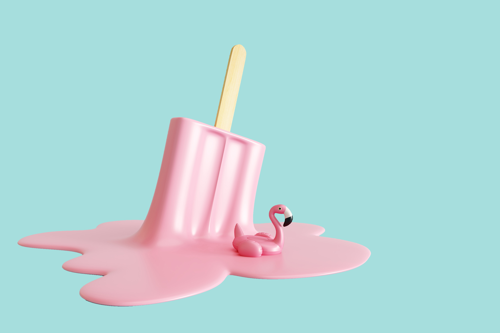

Strona główna
Przepis: Mus malinowy
Film
Dodaj swój przepis
...
Letnie smaki
Skosztuj najlepszych pomysłów.

Sprawdź najnowszy przepis!
Mus malinowy
Składniki:
250 ml śmietanki 36 proc
60 ml mleka
5 listków żelatyny
200 g cukru pudru
0.5 kg malin